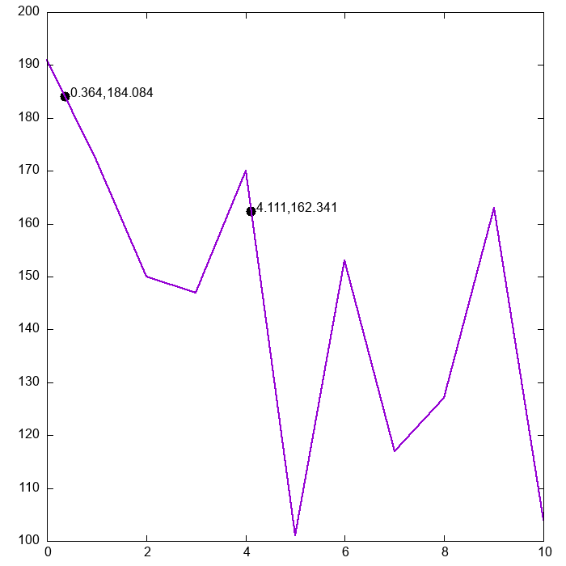

This example illustrates the use of FU_Prec, FU_Files and FU_Interpolation modules using a simple program.
It reads a dataset from an external file with the proper format and performs linear interpolation to obtain some intermediate values.
The dataset can be downloaded here. As stated in the documentation of readMatrix the file must have the following format:
The first line indicates the number of rows, columns and the presence of a header line in the second line.
In this example, the second line of the file is a header, which will be automatically skipped.
After that, the values of the matrix are given.
The content of the file is:
11 2 T
#Time Measurement
0 191
1 172
2 150
3 147
4 170
5 101
6 153
7 117
8 127
9 163
10 104
PROGRAM FU_example4
! Example program for FU_Prec, FU_Files and FU_Interpolation modules of ecasglez's FortranUtilities,
! showing how to load data from a file and perform a linear interpolation.
! The dataset can be downloaded from: https://ecasglez.github.io/FortranUtilities/page/Examples/Example04/example4.dat
! compile using: gfortran example4.f90 -o example4 -I/path/to/include/ -lFortranUtilities -L/path/to/lib/ -O2
! before running: export LD_LIBRARY_PATH=/path/to/lib:${LD_LIBRARY_PATH}
! run using: ./example4
! license: MIT.
USE FU_Prec , ONLY: dp
USE FU_Files , ONLY: readMatrix
USE FU_Interpolation, ONLY: lin_interp
IMPLICIT NONE
LOGICAL :: exists
REAL(KIND=dp), DIMENSION(:,:), ALLOCATABLE :: matrix
!First check if the dataset exists.
INQUIRE(FILE='example4.dat', EXIST=exists)
IF (.NOT.exists) THEN
WRITE(*,*) 'ERROR: Dataset named "example04.dat" not found.'
STOP
END IF
!Load the data in the file.
CALL readMatrix('example4.dat',matrix)
PRINT *, 'Value at x=0.364 is ', lin_interp(0.364_dp, matrix(:,1), matrix(:,2))
PRINT *, 'Value at x=4.111 is ', lin_interp(4.111_dp, matrix(:,1), matrix(:,2))
DEALLOCATE(matrix)
END PROGRAM FU_example4
Compile using the following command. Adjust paths accordingly.
gfortran example4.f90 -o example4 -I/path/to/include/ -lFortranUtilities -L/path/to/lib/ -O2
Before running, since it has been compiled against the shared library:
export LD_LIBRARY_PATH=/path/to/lib:${LD_LIBRARY_PATH}
Then run with:
./example4
The output of the execution is:
Value at x=0.364 is 184.08400000000000
Value at x=4.111 is 162.34100000000001
These results and the dataset can be plotted using a external tool to see the adjustment:
